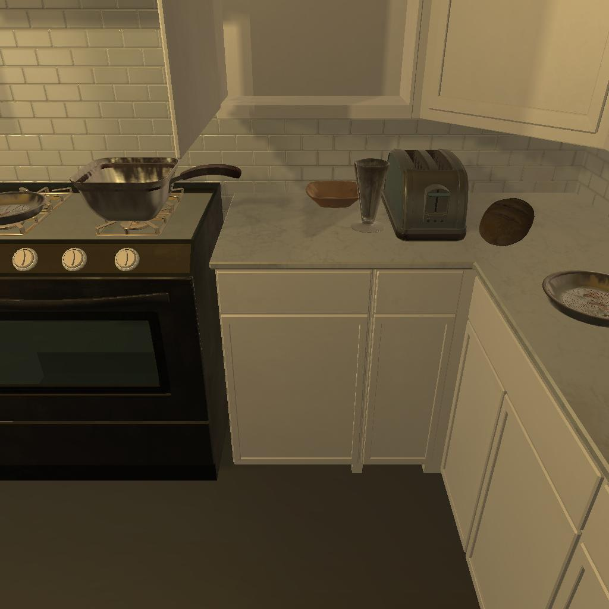

---------------------------------------------------------task: 10---------------------------------------------------------
--------------------------------------------------------------------------------------------------------------------------------------------------------------------
--------------------------------------------------------------------------------------------------------------------------------------------------------------------
Step:--------------------------------------------------------------------------4-------------------------------------------------------------------------------
----------------------------------------
VLM Prompt:
**Task**
Please perform as an embodied AI agent. Our final objective is to put a clean plate in countertop. Below is the plan for completing the task, the current observation, alongside historical data and admissible actions for the next step. Please determine the best action for the next step!
**Plan**
Below is a detailed step-by-step plan to complete the task.
1. Find a plate.
2. Pick up the plate.
3. Find a sink or basin.
4. Clean the plate with the sink or basin.
5. Find a countertop.
6. Place the cleaned plate on the countertop.
**Current Observation**
Displayed is an image capturing the current position of the agent.
**History Information**
Displayed are the previous observations with their corresponding actions.
State 0:
No history.
State 1:
1. Step Index in the Plan: 1
2. Objects: Sink, Countertop, Cabinet Doors
3. Action: go to cabinet 1
State 2:
1. Step Index in the Plan: 1
2. Objects: Blank Wall, Cabinetry (potential location of plate)
3. Action: open cabinet 1
State 3:
1. Step Index in the Plan: 1
2. Objects: Countertop, Cabinetry
3. Action: go to cabinet 2
State 4:
1. Step Index in the Plan: 1
2. Objects: Cabinet, Plate (not visible)
3. Action: go to cabinet 2
**Admissible Actions**
(1): go to cabinet 1
(2): go to cabinet 3
(3): go to toaster 1
(4): go to cabinet 4
(5): go to cabinet 5
(6): go to microwave 1
(7): go to garbagecan 1
(8): go to countertop 1
(9): go to drawer 1
(10): go to cabinet 6
(11): go to cabinet 7
(12): go to drawer 2
(13): go to stoveburner 1
(14): go to stoveburner 2
(15): go to countertop 2
(16): go to cabinet 8
(17): go to cabinet 9
(18): go to cabinet 10
(19): go to drawer 3
(20): go to drawer 4
(21): go to stoveburner 3
(22): go to stoveburner 4
(23): go to cabinet 11
(24): go to cabinet 12
(25): go to cabinet 13
(26): go to cabinet 14
(27): go to sinkbasin 1
(28): go to sink 1
(29): go to cabinet 15
(30): go to fridge 1
(31): go to cabinet 16
(32): go to cabinet 17
(33): go to cabinet 18
(34): go to cabinet 19
(35): go to diningtable 1
(36): go to coffeemachine 1
(37): go to cabinet 20
(38): open cabinet 2
(39): close cabinet 2
**Analysis Guideline**
1. Analyze the history and current observation, and then determine our current step in the plan and our current place.
2. List all visible objects related to the task in the current observation, without summarizing any as "various items."
3. Analyze the objects in the current observation based on the history and the requirements for the current step, and then determine if we can complete the step with the current observation.
4. Analyze and decide on the most appropriate action to take.
5. Summarize the analysis using the following format: "Analysis: [The summarization of the analysis], The Most Appropriate Action: (i which is the integer.): [Selected action]"
**Notes**
1. We must complete each step of the plan in order and cannot skip steps when the previous ones are not finished.
2. For "Go to" actions listed as "go to xxx [n]", interpret this as there are n distinct actions available: "go to xxx 1", "go to xxx 2", ..., "go to xxx n". Select one specific action from these options instead of using "go to xxx [n]".
3. If receptacles such as drawers, cabinets, and so forth are closed in the current observation, we may try to open them.
4. Pay attention to synonyms and ensure clarity in the terms used.
5. We must determine and provide the single action which must be in the **Admissible Actions**.
6. If there is no history available, we are at the first step and the current place is "Unknown".
**Answer**
Please select the most suitable action by following the **Analysis Guideline**, keeping the above **Notes** in mind.
----------------------------------------
----------------------------------------
VLM Response:
Analysis: The current step in the plan is to find a plate, which corresponds to step 1. Our current place appears to be facing cabinet 2, given that the history indicates actions taken to approach and open cabinet 2. The visible objects related to the task in the current observation are the countertop, cabinet 2, and various kitchen appliances like a toaster and a stove. According to the history, the agent has already approached cabinet 2 and attempted to find a plate but the plate was not visible. The cabinet 2 is still closed in the current observation, which suggests that the action to open cabinet 2 has not been completed or the cabinet has been closed again. Since finding a plate is the current objective and the cabinet 2 is a potential location where a plate could be stored, the most appropriate action is to open cabinet 2 to search for a plate.
The Most Appropriate Action: (38): open cabinet 2
----------------------------------------
----------------------------------------
>>> Refine VLM Response and Get Pure Action: open cabinet 2
----------------------------------------
-----------------------------------------------------------------
Running time: 10.848700046539307 seconds
Total Money: 0
-----------------------------------------------------------------
-----------------------------------------------------------------
Summarization Prompt:
**Context**
Analysis: Since there is no history information, we are at the first step in the plan, which is to find a statue. The current place is unknown. In the current observation, we see a floorlamp next to an armchair with a small table that has a small object on it, which could potentially be the statue we are looking for. Since the plan requires us to find a statue first and it appears there might be one on the table next to the armchair, we should investigate this object to determine if it is the statue we need.
The Most Appropriate Action: (1): go to armchair 1
**Summary**
1. Step Index in the Plan: 1
2. Objects: Floorlamp, Armchair, Small Table, Small Object (potential statue)
3. Action: go to armchair 1
**Context**
Analysis: The current step in the plan is to find a plate, which corresponds to step 1. Our current place appears to be facing cabinet 2, given that the history indicates actions taken to approach and open cabinet 2. The visible objects related to the task in the current observation are the countertop, cabinet 2, and various kitchen appliances like a toaster and a stove. According to the history, the agent has already approached cabinet 2 and attempted to find a plate but the plate was not visible. The cabinet 2 is still closed in the current observation, which suggests that the action to open cabinet 2 has not been completed or the cabinet has been closed again. Since finding a plate is the current objective and the cabinet 2 is a potential location where a plate could be stored, the most appropriate action is to open cabinet 2 to search for a plate.
The Most Appropriate Action: (38): open cabinet 2
Please summarize the context by following above examples when providing the summary, and ensure that only the summary is included, without any extra explanation.
**Summary**
-----------------------------------------------------------------
-----------------------------------------------------------------
Summarization Response:
1. Step Index in the Plan: 1
2. Objects: Countertop, Cabinet 2, Kitchen Appliances (toaster, stove)
3. Action: open cabinet 2
-----------------------------------------------------------------
-----------------------------------------------------------------
Text Observation:You open the cabinet 2. The cabinet 2 is open. In it, you see a pot 1, a pan 1, a bread 1, a cup 1, a pan 2, a bowl 1, a stoveknob 1, a stoveknob 2, and a stoveknob 3.
-----------------------------------------------------------------
UNSUCCEED